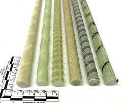
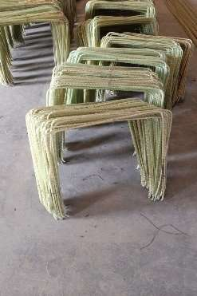
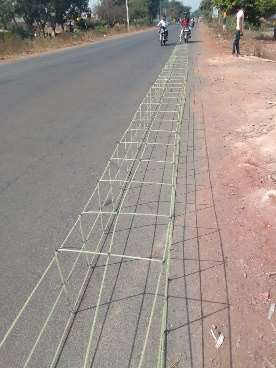
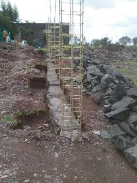
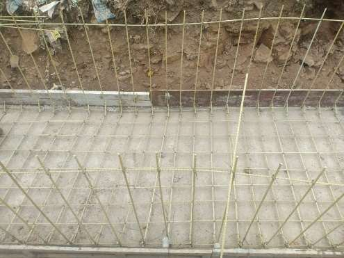
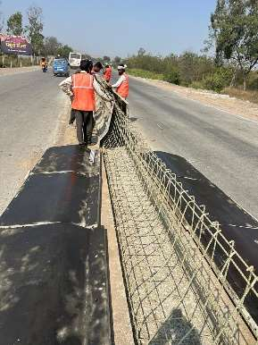
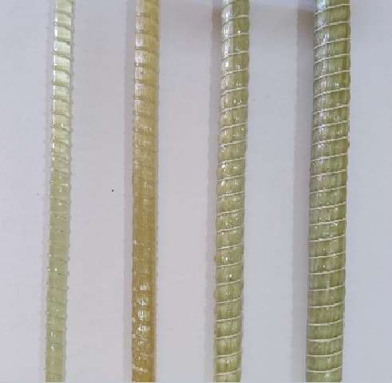

Product name: Glass Fibre Reinforced Polymer (GFRP) Rebars
Raw material: Glass fibre + high-temperature epoxy polymer matrix
| Rebar diameters | 8 mm to 24 mm |
| Glass fibre content | 80% |
| Epoxy polymer system | 20% |
| Types manufactured | Ribbed and sand-coated, as required by the application. Bent-up bars, stirrups and custom shapes are made in the factory to your bar bending schedule. |
Highways and NHAI works, road and storm-water drainage, RCC gutters, sewage and STP structures, coastal and marine works, industrial and trimix flooring, boundary and compound walls, precast units and general civil construction.
| Property | Steel rebar | GFRP rebar |
|---|---|---|
| Tensile Strength (MPa) | 360–500 | 800–1000 |
| Elastic Modulus (GPa) | 200 | 40–50 |
| Tensile Strain (%) | 14–15 | 1.5–2.1 |
| Shear Strength | 130 | 160 |
| Density (g/cc) | 7.0–8.0 | 1.9–2.6 |
| Compression Strength (MPa) | 250 | 250 |
| Bond Strength (MPa) | 7–9 | 9–13 |
| Thermal Coefficient of Expansion (10-6/K) | 13–15 | 9–12 |
| Corrosion Resistance | No | Yes |
| Chemical Resistance | No | Yes |
| Thermal Conductivity | Yes | No |
| Electrical Conductivity | Yes | No |
| Sensitive to Electromagnetic Field | Yes | No |
| Life Expectancy | 30–40 years | More than 100 years |
| Steel dia (mm) | GFRP dia (mm) |
|---|---|
| 8 | 6 |
| 10 | 8 |
| 12 | 10 |
| 16 | 12 |
| 20 | 16 |
| 24 | 20 |
Indicative equivalence only. The final bar size and spacing must be designed by the project's structural engineer to the applicable FRP design codes.
| Diameter (mm) | Cross-sectional area (mm²) | Max tensile strength (MPa) | Permissible load capacity (tonne, min.) |
|---|---|---|---|
| 6 | 28.3 | 1230 | 2.54 |
| 8 | 50.2 | 1050 | 4.52 |
| 10 | 78.5 | 1050 | 7.45 |
| 12 | 113.0 | 1000 | 9.04 |
| 16 | 201.0 | 950 | 15.07 |
| 20 | 314.0 | 950 | 21.98 |
| 24 | 452.2 | 900 | 29.39 |
| Diameter (mm) | Ribbed (kg/m) | Sand-coated (kg/m) | Length per tonne, ribbed (m) | Length per tonne, sand-coated (m) |
|---|---|---|---|---|
| 8 | 0.105 | 0.115 | 9,524 | 8,696 |
| 10 | 0.158 | 0.168 | 6,329 | 5,952 |
| 12 | 0.230 | 0.240 | 4,348 | 4,167 |
| 16 | 0.410 | 0.420 | 2,439 | 2,381 |
| 18 | 0.506 | 0.516 | 1,976 | 1,938 |
| 20 | 0.625 | 0.635 | 1,600 | 1,575 |
| 22 | 0.756 | 0.766 | 1,323 | 1,305 |
| 24 | 0.900 | 0.910 | 1,111 | 1,099 |
Weights are approximate nominal values. Sand-coated bars are about 0.010 kg/m heavier than ribbed bars.
Bent-up bars can be made to standard and non-standard designs provided by the client. Test certificates are supplied with every order.






